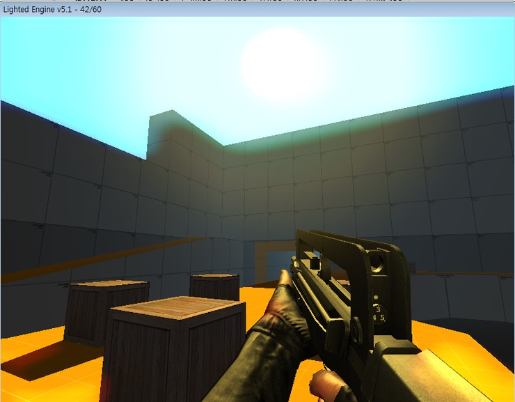

yoyogames 에서 활동하고 계시는 DJKevy 님이 게임메이커로 만든 FPS 엔진입니다.
오픈소스게임엔진치고는 그래픽이 진짜좋네요
하지만 이걸로게임을만들경우 맵의 구조를 바꿀수없으며 적 유닛을 배치할수없고 텍스쳐와 무기밖에 바꿀수 없습니다
다만 무기의 스킨말고 아예 모델을 바꿀려면 3Dmax나 밀크쉐이프를 전문적으로 다룰줄 알아야합니다
이걸로 만든게임은 총으로 박스굴리면서 노는것 밖에 안됩니다.

ㅇㅇㅇㅇ
다운로드 (PC전용)(깃허브와 연결되어있음)
참고로 원본파일이 올라가있던 요요게임즈 샌드박스 사이트가 폐쇠되어서 원본사이트에서는 받을수 없게 되었습니다.